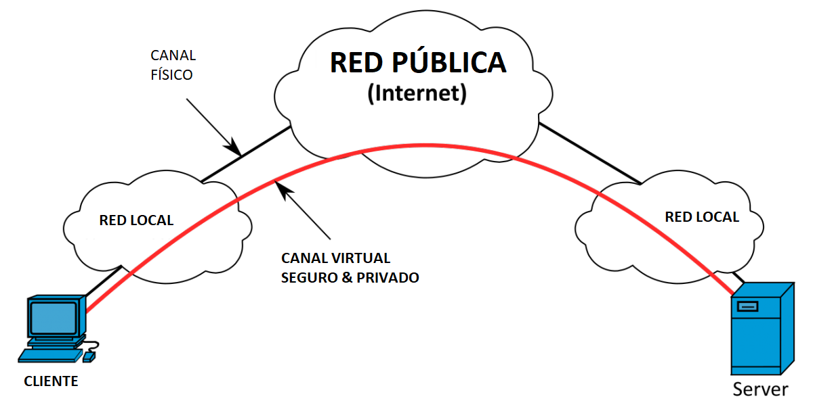

Seguridad en la comunicación de datos
Virtual Private Network (VPN)
Una red privada virtual (VPN por sus siglas en inglés) es una red de comunicación virtual que se gestiona tomando como base una red física aunque, lógicamente, separada de ella. Internet es el medio de transporte para las VPN más usado. Para asegurar la confidencialidad de los datos durante su transmisión mediante una línea pública, el canal de transporte en una red VPN está protegido por procedimientos de codificación y autenticación. En este sentido se habla de tunneling o tunelización, ya que los datos que se transfieren a través de una red privada virtual no son visibles para otros usuarios de la red pública subyacente. Una VPN hace posible un transporte más seguro de los datos sensibles a través de una conexión no fiable y se erige, por consiguiente, como una alternativa económica para líneas privadas.
Usos de una VPN
Los ámbitos de aplicación más importantes en lo que respecta a la instalación de una VPN son: la conexión de dos o más empresas a través de una red pública (VPN Site to Site), el acceso a la red empresarial desde casa o desde cualquier otro lugar (VPN End to Site) y el acceso remoto de un ordenador a otro (VPN End to End).
VPN Site to Site
Una VPN Site to Site o VPN punto a punto entra en acción cuando se necesita integrar varias redes locales en una red de comunicaciones virtual a través de un canal de transporte público. Este tipo de situación se da, por ejemplo, a la hora de establecer la conexión entre diferentes empresas, agencias o establecimientos. Alternativamente, la conexión de emplazamientos también se puede llevar a cabo en forma de red corporativa (Corporate Network) sobre la base de una conexión fija. En este caso, sin embargo, hay que alquilar la infraestructura correspondiente. La conexión mediante una red VPN, por el contrario, utiliza la red pública, de modo que solo se ha de contar con los costes por la conexión a Internet. Para establecer una VPN punto a punto se requiere que cada uno de los puntos tenga un router para VPN y que este cree el túnel entre la red local. Otras denominaciones para la VPN punto a punto son VPN LAN to LAN o Branch Office VPN.
VPN End to Site
Las empresas recurren a las VPN End to Site, también conocidas como VPN de acceso remoto, cuando tienen la necesidad que crear un acceso para aquellos usuarios que no trabajan in situ, sino que lo hacen desde casa o desde cualquier otro lugar ajeno a la oficina. El túnel a la red local se construye por medio de un cliente VPN en el equipo terminal del trabajador externo, donde Internet se convierte en el canal de transporte. Con todo ello, los trabajadores pueden conectarse a la red de la empresa, al servidor de archivos o de correo electrónico o hacer uso del software especializado del sector en cualquier lugar siempre y cuando tengan acceso a Internet.
VPN End to End
Si el acceso remoto no tiene lugar en una red local, sino que se produce entre un ordenador y otro, se puede hablar entonces de VPN End to End. La característica básica de esta modalidad de VPN es que la conexión se crea por medio del llamado escritorio remoto. Esta es una técnica por la que los programas de aplicación se llevan a cabo en un ordenador y estos se representan y se manejan desde otro. El canal de transporte puede ser Internet o una red local de la empresa. En el contexto empresarial se aplica una VPN de escritorio remoto cuando los trabajadores trabajan desde casa y necesitan, para ello, acceder al ordenador situado en su puesto de trabajo.
Conexiones cifradas
Para implementar conexiones cifradas con VPN se puede hacer uso de numerosos protocolos. Entre las soluciones más habituales se encuentran IPSec, L2TP sobre IPSec y SSL.
VPN basadas en IPsec
Internet Protocol Security, más conocido por sus siglas en inglés IPSec, es un conjunto de protocolos concebido para la versión 6 del Protocolo de Internet (IP), es decir, para IPv6. Este garantiza una comunicación segura sobre redes IP no fiables y, además, salvaguarda la confidencialidad, autenticidad e integridad de la transmisión de datos por medio de mecanismos de codificación y autenticación. El protocolo IPSec fue desarrollado junto a IPv6 y, posteriormente, también implementado para IPv4.
L2TP sobre IPSec
Una red privada virtual que se crea usando L2TP sobre IPSec recurre al L2TP o “Layer 2 Tunneling Protocol” (Protocolo de túnel de capa 2). El L2TP no contiene ningún sistema de codificación, por lo que irá combinado con IPSec. Mientras que IPSec solo puede transportar paquetes de IP por el túnel, L2TP, por su parte, soporta un gran número de protocolos de transporte. La combinación de L2TP sobre IPSec une los puntos fuertes de cada estándar y da como resultado un protocolo de tunneling flexible con un elevado grado de seguridad.
Conexión SSL-VPN
El protocolo SSL fue concebido originariamente para usarse en el contexto de HTTP y es independiente de las aplicaciones. Dicho protocolo criptográfico también se usa para proteger las conexiones VPN. Una de las soluciones de software más populares para crear una red VPN por medio de una conexión SSL es OpenVPN.
Ventajas de una VPN
En la actualidad podemos optar por emplear redes VPN desplegándolas de forma propia en la empresa o empleando servicios de terceros.
Si optamos por el uso de VPN de terceros, el despliegue, configuración y seguridad son mantenidos por el proveedor, lo que facilita a la empresa comenzar con su actividad en el menor tiempo posible, despreocupándose del coste y configuración de los equipos necesarios. Sin embargo, la gestión de la red, su seguridad y su velocidad, así como la privacidad, dependerán del nivel que el proveedor haya implementado. Conviene recordar también que en la contratación de servicios de terceros, se considera una práctica recomendable firmar un acuerdo de confidencialidad y de nivel de servicios o SLA (Service Level Agreement) con el proveedor de los mismos, para poder disponer de unas garantías por escrito.
Por el contrario, desplegar una VPN a nivel privado en la empresa, supone mayores costes en cuanto a equipos y configuración, así como personal cualificado. A cambio, permite controlar la seguridad, privacidad y mejora el ancho de banda, evitando conexiones de intermediarios en la nube y posibles cortes de servicio ajenos a la empresa.
En ambos casos, emplear un túnel privado o VPN para transmitir información tiene una serie de ventajas frente a hacerlo directamente a través de Internet:
- Autenticación verificada: el usuario que utiliza el túnel es quien dice ser gracias a un certificado intercambiado entre el cliente y servidor.
- Integridad de los datos: el empleo de hashes permite verificar que los datos que se transmiten no han sufrido modificaciones entre las partes legítimas de transmisión.
- Confidencialidad: gracias al empleo de técnicas de cifrado cada vez más avanzadas, nadie podrá acceder a la información.
- Uso de la red interna empresarial, como si se estuviera delante del ordenador de la empresa, permitiendo que a la persona que conecta se le apliquen las directivas de seguridad de la red empresarial y los permisos de acceso correspondientes.
- Permiten el uso de redes abiertas con seguridad, por ejemplo, en el aeropuerto o en una cafetería. En estos casos, la información que enviamos a través de una red wifi no segura, viaja por su propio túnel (encapsulamiento) y de manera ilegible (cifrada), y solo el destinatario legitimo al final del túnel puede descifrar la información y acceder a ella.